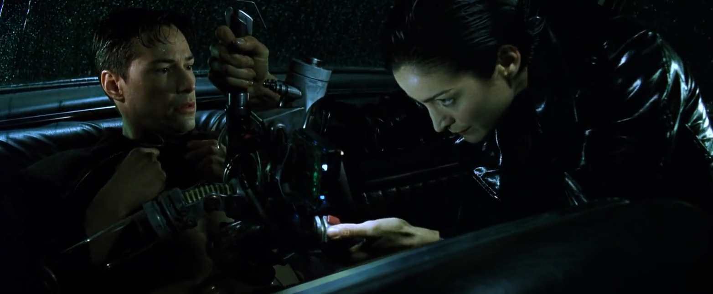

One of the best movies The Matrix also a strange film and cofusing.made in March 31 1999 the writing and directing sibling team of Lana and Lilly Wachowski. release their second film the mind-blowing science-fiction blockbuster The Matrix. this movie was made into a various sequels. All the that were made are call The Matrix, The Matrix Reloaded, and then The Matrix Revolutions, and the last one is The Matrix Resurrections.
Click here to see a guide to wacht it !
Now let talk about the story it depicts a dystopian future in which humanity is unknowingly trapped inside a simulated reality. The Matrix which intelligent machines have created to distract humans. While using their bodies as an energy source.The main characters are Neo, trinity,Morpheus.The main piont for this film or sequel is everyone has the individual responsibility to make the choice between the real world and an artificial world.
In the Start of the Movie Matrix start of matrix the movie begins with Neo being freed from the Matrix Morpheus believes Neo is The One and Neo will help bring down the Matrix. As the plot unfolds, Neo begins to display more abilities that hint that he indeed could be The One. Trinity has been told by the Oracle that she will fall in love with The One. After Neo is at work he gets a delivery of a phone that gets called quickly and tells him to escape from the matrix agent and his work building, but while escaping he get a bug but in his stomach then woke up. Soon after he woke up neo is on a highway to go to morpheus. On the highway trinity uses a special gun to shock the bug out of his stomach.
Now one the best and iconic prhase is you You take the blue pill the story ends, you wake up in your bed and believe whatever you want to believe. You take the red pill... you stay in Wonderland, and I show you how deep the rabbit hole goes."
p>Click here to see Cool facts! secondary page